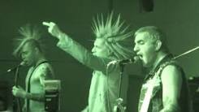
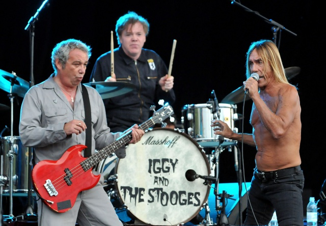

El punk, también llamado punk rock, es un género musical que emergió a mediados de los años 1970. Este género se caracteriza en la industria musical por su actitud independiente y contracultural.
La música punk o punk rock nace como género derivado del Rock a principios de los años 70 en su forma más agresiva y contestataria. Canciones cortas, con tempo acelerado y un sonido distorsionado implicaban para los jóvenes de la época la expresión máxima de la rebeldía, no solo por su lírica llena de crítica social sino por lo que culturalmente representaba.
tiene un estilo agresivo siempre en contra de algun movimiento politico insitando a la libertad y explisividad de las personas
Las líneas de guitarra se caracterizan por la sencillez y crudeza del sonido amplificado y muy distorsionado que crean un ambiente sonoro ruidoso o agresivo heredado del garage rock. En ocasiones, el bajo sigue solo la línea del acorde y no busca adornar con octavas ni arreglos en la melodía pero, por lo general, en las primeras formaciones de punk (aspecto que se repetiría más adelante con las bandas de post punk), el bajo presenta arreglos sencillos y constantes.
A finales de los años 1960, una corriente de jóvenes del Reino Unido, Estados Unidos y otros países, consideraban que el rock había pasado de ser un medio de expresión para los jóvenes, a una mera herramienta de mercado y escaparate para la grandilocuencia de los músicos de ese entonces, alejando la música de la gente común. El punk surgió como una burla a la rigidez de los convencionalismos que ocultaban formas de opresión social y cultural.